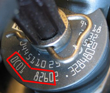

Due to tolerances when manufacturing the injectors the injected fuel quantity may deviate between the actual and calculated fuel quantity. After manufacturing these deviations are established and an adjustment value is developed for each injector. With these adjustment values the engine control module corrects the calculated injection quantity and thus improves exhaust emissions. With this function the installed injectors' two adjustment can be changed or stored again in the engine control unit.
The following letters and digits may be used for adjustment values.
Digits: 0-9
Letters: A-F
Exhaust class EURO 4: eight characters (see figure).

If an injector has been overhauled or replaced you have to check that the marked adjustment value on the injector matches the value stored for that cylinder in the engine control unit. If the engine control unit has been replaced an adjustment must be performed for all cylinders so that all installed injectors' adjustment values are stored in the new control unit.
Test conditions:
Ignition on, engine off.
No faults in the system.
Read off the adjustment value on the injector.
Procedure:
Start the function.
Stored values for all cylinders are shown. If any value should be changed, press "YES".
Select on which cylinder the value should be changed, enter the new value and press "OK" to save.
Values for all cylinders are shown again. Check that the new value for the selected cylinder is saved.
If no other values should be changed, select "NO" to exit the function.
The function is done.
If the function fails, check the test conditions and repair any faults.